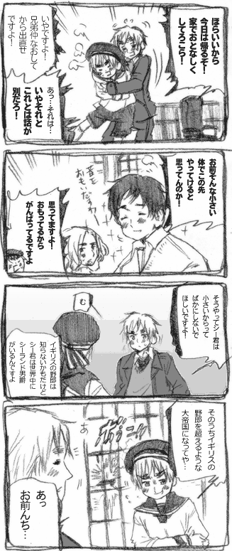
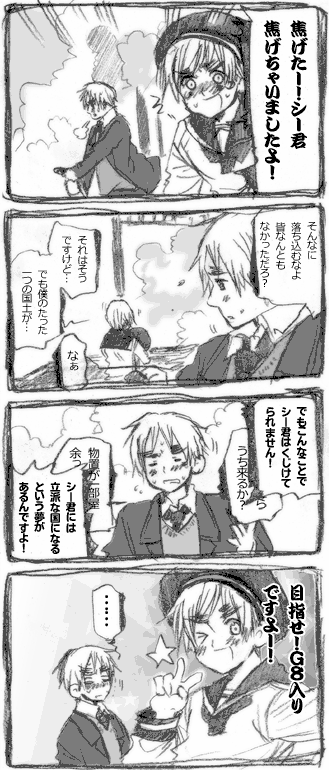
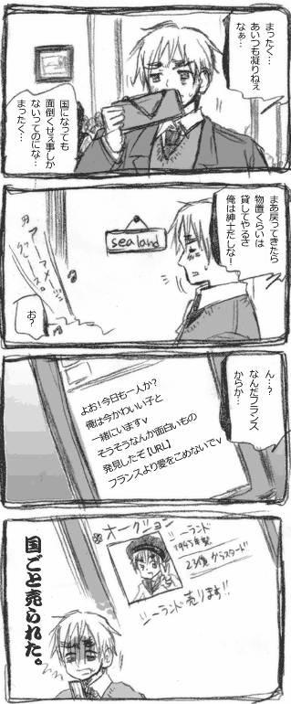
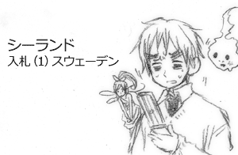
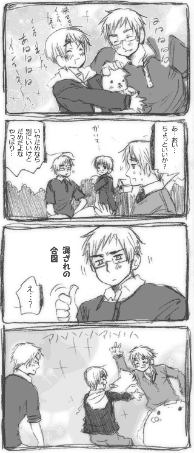
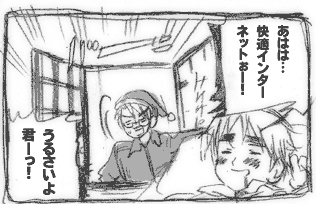
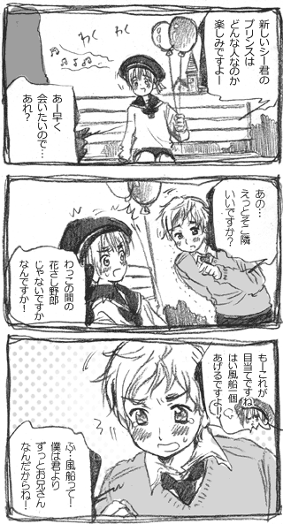
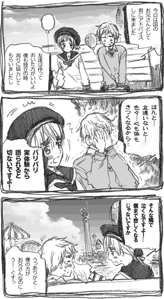
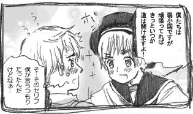
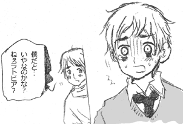

|
■イギイギ帰宅命令ですよ■

■シーランドのどうでもいい知識■
人口４人のシーランドには公式サッカーチームがある。
デンマークのあるサッカーチームに
「シーランドが公認しました」と勝手に送りつけて
シーランド公認サッカーチームにしたんだそうです。
■シーランド魂■

一か月後そこには元気に駆け回るシーランドの姿が！
必要部分は一か月ですぐに復旧したそうです。
ちなみにイギリスとシーランドは
国か国じゃないか裁判で争っていますが
一人留守番していた兵士を救助したのはイギリス。
■シーランド軍■
シーランドには普段国王ファミリーは不在で
シーランド兵一人がライフル一丁で
お留守番をしています。
シーランド国歌は「海からの自由」
このシーランド兵のテーマ曲です。
普段は一人ですが緊急時になると
プリンスが独自に世界中から集めた
シーランド兵が結集するという話もあります。
■イギリスの野郎ですよ■

クリスマスプレゼントにどうですか？
■本当にただいまシーランド売却中■
国王様自身がシーランドを売りに出してしまいました。
その額は数億とも言われていますが
実際のところ本当に「国家」が売れるのかどうか…
■落札されてました■

気がついたら奴が入札していた。


ただいま売り出し中のシーランドの買い取りに
スウェーデンの海賊企業が名乗りを上げてるらしい。
■東欧バルトからの使者ですよ■




 |
|